Last updated: 2026-10-12
Checks: 6 1
Knit directory: pumseq/
This reproducible R Markdown analysis was created with workflowr (version 1.7.1). The Checks tab describes the reproducibility checks that were applied when the results were created. The Past versions tab lists the development history.
The R Markdown file has unstaged changes. To know which version of
the R Markdown file created these results, you’ll want to first commit
it to the Git repo. If you’re still working on the analysis, you can
ignore this warning. When you’re finished, you can run
wflow_publish to commit the R Markdown file and build the
HTML.
Great job! The global environment was empty. Objects defined in the global environment can affect the analysis in your R Markdown file in unknown ways. For reproduciblity it’s best to always run the code in an empty environment.
The command set.seed(20260202) was run prior to running
the code in the R Markdown file. Setting a seed ensures that any results
that rely on randomness, e.g. subsampling or permutations, are
reproducible.
Great job! Recording the operating system, R version, and package versions is critical for reproducibility.
Nice! There were no cached chunks for this analysis, so you can be confident that you successfully produced the results during this run.
Great job! Using relative paths to the files within your workflowr project makes it easier to run your code on other machines.
Great! You are using Git for version control. Tracking code development and connecting the code version to the results is critical for reproducibility.
The results in this page were generated with repository version acbd430. See the Past versions tab to see a history of the changes made to the R Markdown and HTML files.
Note that you need to be careful to ensure that all relevant files for
the analysis have been committed to Git prior to generating the results
(you can use wflow_publish or
wflow_git_commit). workflowr only checks the R Markdown
file, but you know if there are other scripts or data files that it
depends on. Below is the status of the Git repository when the results
were generated:
Ignored files:
Ignored: analysis/qtl_mapping_summary_cache/
Unstaged changes:
Modified: analysis/qtl_mapping_betabinomial_pc_window_permutation.Rmd
Note that any generated files, e.g. HTML, png, CSS, etc., are not included in this status report because it is ok for generated content to have uncommitted changes.
These are the previous versions of the repository in which changes were
made to the R Markdown
(analysis/qtl_mapping_betabinomial_pc_window_permutation.Rmd)
and HTML
(docs/qtl_mapping_betabinomial_pc_window_permutation.html)
files. If you’ve configured a remote Git repository (see
?wflow_git_remote), click on the hyperlinks in the table
below to view the files as they were in that past version.
| File | Version | Author | Date | Message |
|---|---|---|---|---|
| Rmd | acbd430 | XSun | 2026-10-12 | update |
| html | acbd430 | XSun | 2026-10-12 | update |
| Rmd | 718715e | XSun | 2026-10-12 | update |
| html | 718715e | XSun | 2026-10-12 | update |
| Rmd | 92a3e64 | XSun | 2026-10-12 | update |
| html | 92a3e64 | XSun | 2026-10-12 | update |
| Rmd | 006b3a6 | XSun | 2026-10-12 | update |
| html | 006b3a6 | XSun | 2026-10-12 | update |
| Rmd | 6bf8622 | XSun | 2026-10-12 | update |
| html | 6bf8622 | XSun | 2026-10-12 | update |
suppressMessages({ library(data.table); library(ggplot2) })
knitr::opts_chunk$set(echo = TRUE, warning = FALSE, message = FALSE, fig.align = "center")
PSI <- "/project/xinhe/xsun/pumseq/pumseq_processed/psi_qtl"
CG <- file.path(PSI, "qtl_betabinomial/calibration_grid")
SEL <- file.path(PSI, "qtl_betabinomial/pc_window_selection/fold5_union_auto_noUCcalled/summary")
WINDOWS <- c(5, 20, 50); KS <- c(3, 5, 7, 10, 15)
G <- fread(file.path(CG, "grid_calibration.tsv"))[window_kb %in% WINDOWS & npcs %in% KS]
BD <- fread(file.path(CG, "grid_by_dataset.tsv"))[window_kb %in% WINDOWS & npcs %in% KS]
QQ <- fread(file.path(CG, "grid_qq_thinned.tsv.gz"))[window_kb %in% WINDOWS & npcs %in% KS]
# every p-value, overlapping points merged at a third of a pixel (53.qq_full_page_data.R)
QA <- fread(file.path(CG, "grid_qq_allpoints_merged.tsv.gz"))[window_kb %in% WINDOWS & npcs %in% KS]
source("code/qq_full_style.R")
ST <- fread(file.path(SEL, "selection_table.tsv"))
stopifnot(nrow(G) == 15, QQ[, uniqueN(dataset), by = .(window_kb, npcs)]$V1 == 6)
QQ[, kind := ifelse(dataset == "real", "real data", "5 permutations")]
YMAX <- max(QQ$observed); XMAX <- max(QQ$expected)
fmt <- function(x) format(x, big.mark = ",", trim = TRUE)
# pointwise 95% band for the order statistics of n uniform p-values, on the QQ axes
band <- function(n, expected) {
i <- pmin(pmax(round(n * 10^(-expected) + 0.5), 1), n)
data.table(expected = expected,
lo = -log10(qbeta(0.975, i, n - i + 1)), hi = -log10(qbeta(0.025, i, n - i + 1)))
}
qq_plot <- function(w, k) {
g <- G[window_kb == w & npcs == k]
qq_panel(QA[window_kb == w & npcs == k], sprintf("+/-%d kb, k = %d PCs", w, k)) +
labs(subtitle = sprintf("%s cis tests | permutation lambda %.3f-%.3f, real %.3f\nworst permuted -log10 p %.1f | eSites (q < 0.05): %d",
fmt(g$tests), g$perm_lambda_min, g$perm_lambda_max, g$real_lambda, g$worst_perm_tail,
ST[window_kb == w & npcs == k]$disc_q05)) +
theme(plot.subtitle = element_text(size = 9, hjust = 0.5))
}This page checks how well the likelihood-ratio test is calibrated for each of the 15 configurations considered for the real-data analysis: cis windows of ±5, 20 and 50 kb, and k = 3, 5, 7, 10 and 15 phenotype PCs.
The test. Beta-binomial LRT, with each fit started
from φ = 0.01, 0.1 and 0.5 and the best kept. Covariates are the first k
M-value PCs, and the phenotype is
fold5_union_auto_noUCcalled (10,738 sites).
The permutations. Each configuration was run on the real data and on 5 genome-wide permutations. A permutation shuffles each site’s phenotype and PCs together across cell lines and keeps the genotypes fixed. The same 5 permutation orders are used in every configuration. A permuted data set contains no pU-QTL, so its p-values should follow the diagonal, and any excess is a false positive.
Same fits as the eSite counts. The real-data
p-values here are identical to those of the window and PC selection scan
(47.scan_pc_window_selection.R). That was checked at every
chr21–22 site for ±5 kb with k = 3 (466 sites) and for ±50 kb with k =
15 (336 sites).
What this checks, and what it does not. These are the nominal LRT p-values. The eSite counts in the table and plot subtitles use a different p-value: a per-site permutation p-value under the same k. That p-value is calibrated using within-site permutations. This page checks nominal tests; it does not establish the false discovery rate of the full eSite selection pipeline. A null run of the full selection pipeline has not been done.
The heatmaps show numbers of eSites among all tested sites, using Storey q-values from the 100 within-site permutations, at q < 0.05 and q < 0.10.
tab <- merge(G, ST[, .(window_kb, npcs, disc_q05, disc_q10)], by=c("window_kb","npcs"))
setorder(tab,window_kb,npcs)
FD <- file.path(SEL,"fit_diagnostics")
FS <- fread(file.path(FD,"real_snp_fits.tsv"))
SS <- fread(file.path(FD,"site_status.tsv"))
DD <- fread(file.path(FD,"failure_distribution.tsv"))
heat <- function(d, title, fill="Sites", columns=NULL) {
d <- copy(d)
d[, `:=`(pc=factor(npcs,levels=KS), window=factor(paste0("+/-",window_kb," kb"),
levels=paste0("+/-",rev(WINDOWS)," kb")))]
if (!"label" %in% names(d)) d[,label:=format(value,big.mark=",",trim=TRUE)]
ggplot(d,aes(pc,window,fill=value)) + geom_tile(colour="white",linewidth=1) +
geom_text(aes(label=label),size=4,colour="#132b43") +
scale_fill_gradient(low="#f5f9fc",high="#80bedb",name=fill) +
labs(x="Number of phenotype PCs",y="Cis window",title=title) +
theme_minimal(base_size=12) + theme(panel.grid=element_blank(),
strip.text=element_text(face="bold"),plot.title=element_text(face="bold"))
}
E <- rbindlist(list(
tab[,.(window_kb,npcs,value=disc_q05,cutoff="q < 0.05")],
tab[,.(window_kb,npcs,value=disc_q10,cutoff="q < 0.10")]))
heat(E,"eSites by window, PC count and q-value cutoff","eSites") + facet_wrap(~cutoff,nrow=1)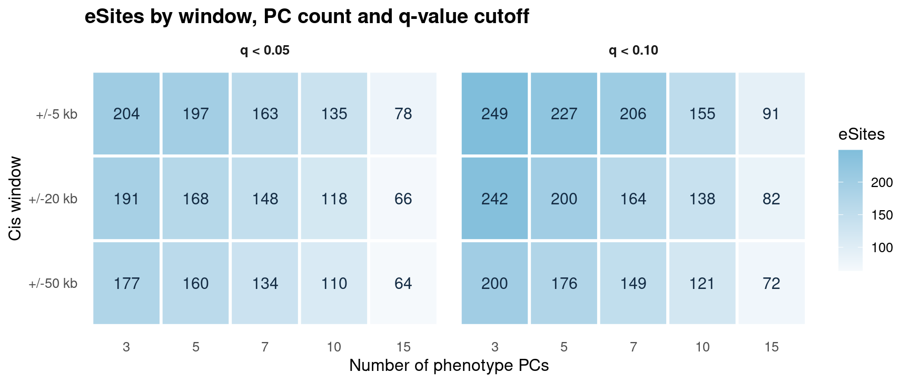
An extreme site has a minimum nominal p-value <1e-10 in the real data and in at least one of the five genome-wide permutations. This flags an extreme tail in the calibration check; it is distinct from a failed fit and from an eSite passing a q-value cutoff.
heat(tab[,.(window_kb,npcs,value=problematic)],
"Sites extreme in both real and permuted data")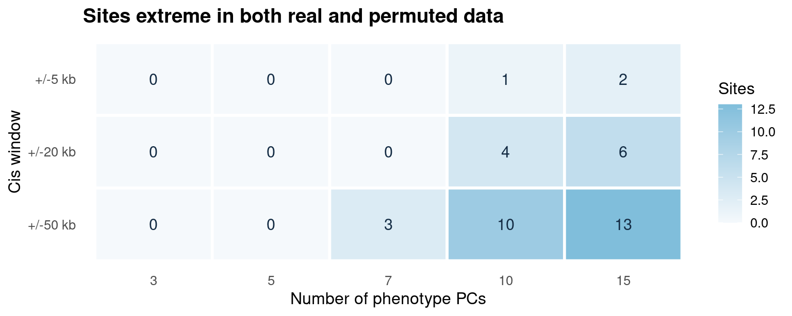
| Version | Author | Date |
|---|---|---|
| 006b3a6 | XSun | 2026-10-12 |
Fits use three starting values and maximum likelihood throughout. A failed fit is one rejected by the production fitter, not a small or near-zero phi estimate. A near-zero phi can be a valid fitted result.
Null-fit failures are shared across the windows; all-SNP-fit failures depend on the window. These diagnostics describe the selection scan, rather than the separate five genome-wide calibration runs.
NS <- SS[,.(total=sum(N),null_failed=sum(N[status=="null_fit_failed"]),
skipped=sum(N[status %in% c("no_cis_snp","no_common_cis_snp","too_few_cell_lines")])),by=npcs]
NS[,eligible:=total-skipped]
NS[,label:=sprintf("%s / %s\n(%.1f%%)",fmt(null_failed),fmt(eligible),100*null_failed/eligible)]
ggplot(NS,aes(factor(npcs,levels=KS),100*null_failed/eligible)) +
geom_col(fill="#4288ab",width=.65) + geom_text(aes(label=label),vjust=-.25,size=3.6) +
scale_y_continuous(expand=expansion(mult=c(0,.22))) +
labs(x="Number of phenotype PCs",y="Null fits rejected (%)",
title="Null-fit failures increase with PC count",
subtitle="Labels: rejected / sites with suitable cis SNPs within 50 kb") +
theme_minimal(base_size=12)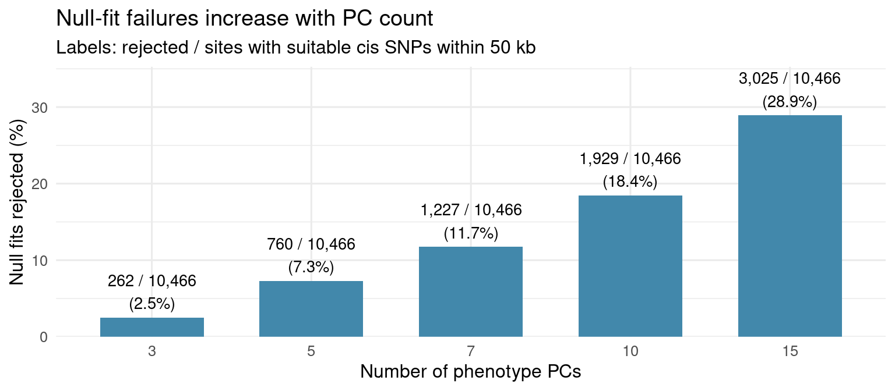
| Version | Author | Date |
|---|---|---|
| 006b3a6 | XSun | 2026-10-12 |
SF <- merge(FS[,.(window_kb,npcs,sites_all_failed)],
NS[,.(npcs,null_failed)],by="npcs")
SF[,total_failed:=null_failed+sites_all_failed]
# At 50 kb the total must equal the failed sites used in the distribution plots.
check <- merge(SF[window_kb==50],DD[variable=="depth_bin",.(failed=sum(failed)),by=npcs],by="npcs")
stopifnot(nrow(check)==length(KS),all(check$total_failed==check$failed))
F <- rbindlist(list(
SF[,.(window_kb,npcs,value=sites_all_failed,metric="Sites: all SNP fits failed (null fit succeeded)")],
SF[,.(window_kb,npcs,value=total_failed,metric="Total failed sites: null + all SNP fits failed")]))
F[,metric:=factor(metric,levels=unique(metric))]
for (m in levels(F$metric)) print(heat(F[metric==m],m) +
theme(plot.title=element_text(size=12)))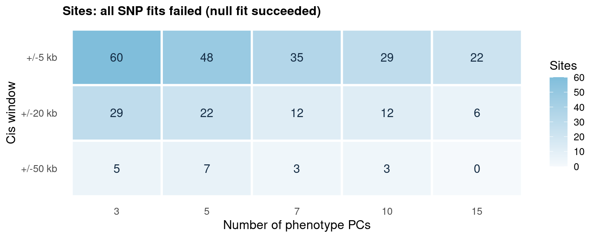
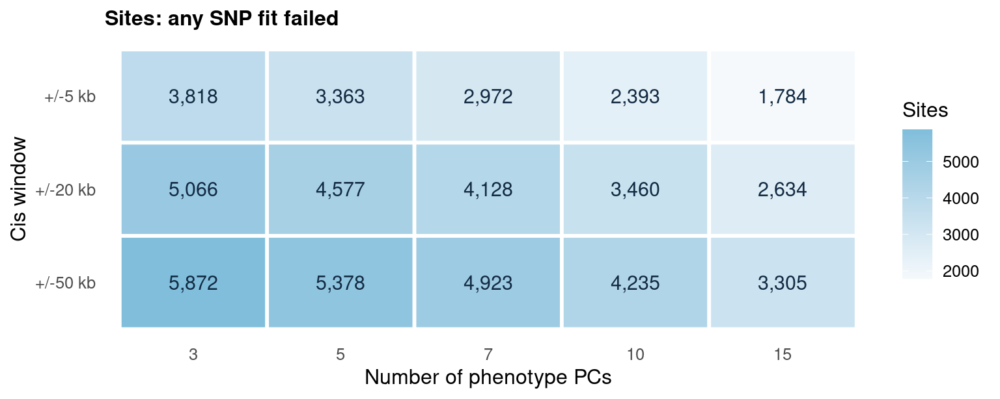
A failed site has a rejected null fit or no successful SNP fit within 50 kb. The failure set is determined separately for each PC setting.
The two heatmaps use different denominators, explained below each tab.
Each cell shows the count and percentage of all failed sites in that depth bin. Each PC column sums to 100% before rounding. Mean depth is total reads divided by the number of covered cell lines.
distribution_plot("depth_bin",c("<=5","5-10","10-20","20-50","50-100",">100"),
"Read-depth distribution among failed sites", "Reads per covered cell line", "distribution")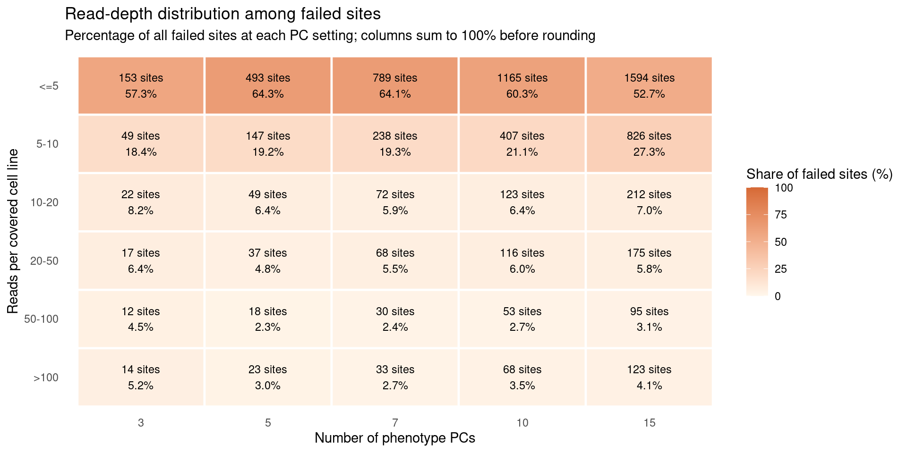
Each cell shows failed sites / eligible sites within that coverage bin and the resulting failure percentage, separately for each PC setting. These percentages measure the chance of failure within each bin and do not sum to 100% down a column. Eligible sites have a suitable cis SNP within 50 kb.
distribution_plot("cells_bin",c("1-9","10-19","20-29","30-39","40-49","50"),
"Failure rate by number of covered cell lines", "Covered cell lines", "rate")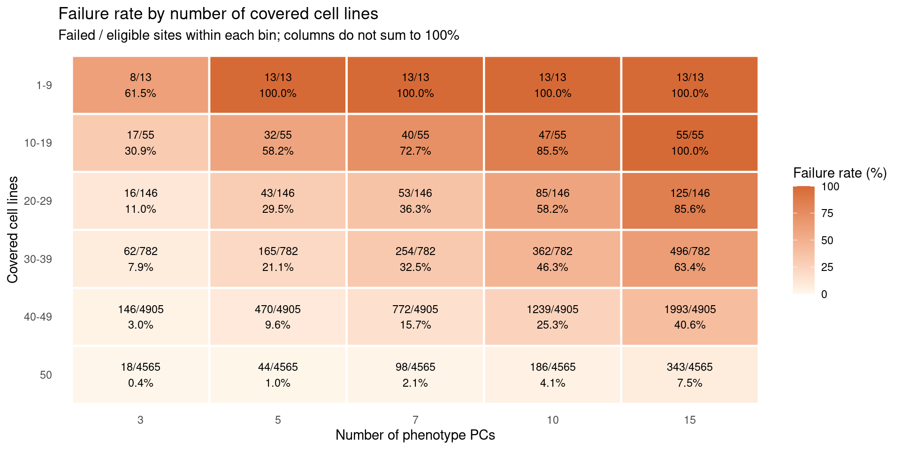
T <- merge(tab,SF,by=c("window_kb","npcs"))
knitr::kable(T[,.(window_kb,npcs,`Tested sites`=tested_sites,
`q<0.05`=disc_q05,`q<0.10`=disc_q10,
`Extreme sites`=problematic,`Null fit failed (sites)`=null_failed,
`All SNP fits failed (sites)`=sites_all_failed,`Total failed sites`=total_failed)])| window_kb | npcs | Tested sites | q<0.05 | q<0.10 | Extreme sites | Null fit failed (sites) | All SNP fits failed (sites) | Total failed sites |
|---|---|---|---|---|---|---|---|---|
| 5 | 3 | 9991 | 204 | 249 | 0 | 262 | 60 | 322 |
| 5 | 5 | 9518 | 197 | 227 | 0 | 760 | 48 | 808 |
| 5 | 7 | 9083 | 163 | 206 | 0 | 1227 | 35 | 1262 |
| 5 | 10 | 8399 | 135 | 155 | 1 | 1929 | 29 | 1958 |
| 5 | 15 | 7340 | 78 | 91 | 2 | 3025 | 22 | 3047 |
| 20 | 3 | 10123 | 191 | 242 | 0 | 262 | 29 | 291 |
| 20 | 5 | 9637 | 168 | 200 | 0 | 760 | 22 | 782 |
| 20 | 7 | 9182 | 148 | 164 | 0 | 1227 | 12 | 1239 |
| 20 | 10 | 8480 | 118 | 138 | 4 | 1929 | 12 | 1941 |
| 20 | 15 | 7407 | 66 | 82 | 6 | 3025 | 6 | 3031 |
| 50 | 3 | 10199 | 177 | 200 | 0 | 262 | 5 | 267 |
| 50 | 5 | 9699 | 160 | 176 | 0 | 760 | 7 | 767 |
| 50 | 7 | 9236 | 134 | 149 | 3 | 1227 | 3 | 1230 |
| 50 | 10 | 8534 | 110 | 121 | 10 | 1929 | 3 | 1932 |
| 50 | 15 | 7441 | 64 | 72 | 13 | 3025 | 0 | 3025 |
L <- BD[dataset != "real", .(lo = min(lambda), hi = max(lambda), mid = median(lambda)), by = .(window_kb, npcs)]
L[, window := factor(sprintf("%d kb", window_kb), levels = sprintf("%d kb", WINDOWS))]
ggplot(L, aes(npcs, mid, colour = window)) +
geom_hline(yintercept = 1, colour = "grey55", linetype = "dashed", linewidth = 0.4) +
geom_errorbar(aes(ymin = lo, ymax = hi), width = 0.35, position = position_dodge(width = 0.8)) +
geom_point(size = 2, position = position_dodge(width = 0.8)) +
scale_colour_manual(values = c("5 kb" = "#1f4e9c", "20 kb" = "#2c8a4a", "50 kb" = "#d98c00"), name = "cis window") +
scale_x_continuous(breaks = KS) +
labs(x = "phenotype PCs (k)", y = "genomic-control lambda",
title = "Calibration under permutation",
subtitle = "Point = median over the 5 permutations, bar = range. Dashed line = 1 (perfect calibration).") +
theme_bw(base_size = 11) + theme(panel.grid.minor = element_blank())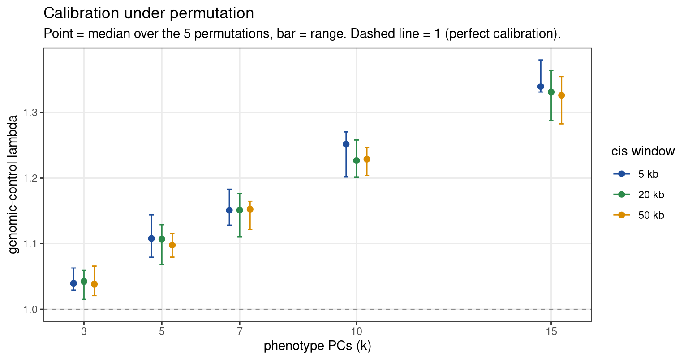
Each panel shows every cis test on the real data (teal) and on the 5 permutations (light blue), and has its own y-axis. Every p-value is included. There are 1.75 to 17.6 million per configuration, so points that would land on the same spot of the figure (within a third of a pixel) are drawn once; the picture is the same as plotting each one.
for (k in KS) { cat(sprintf("\n\n### k = %d\n\n", k)); print(qq_plot(5, k)); cat("\n\n") }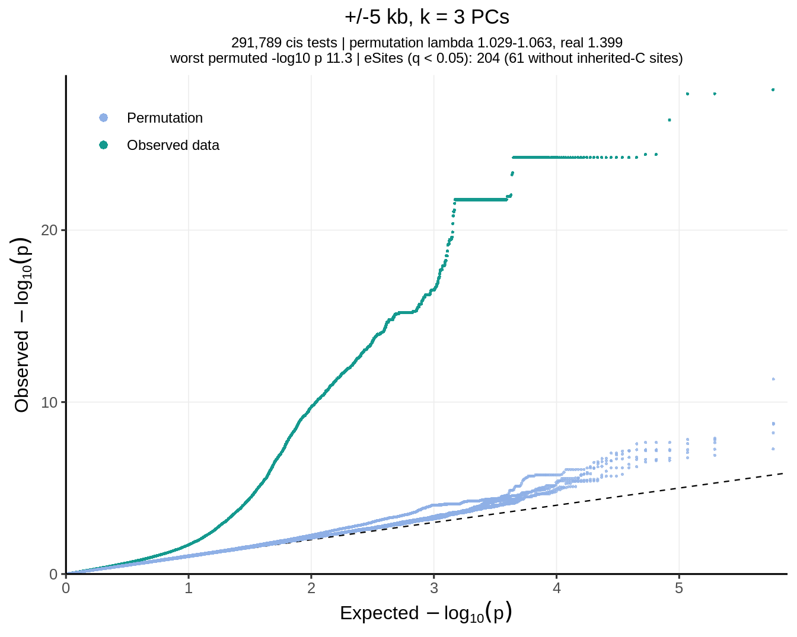
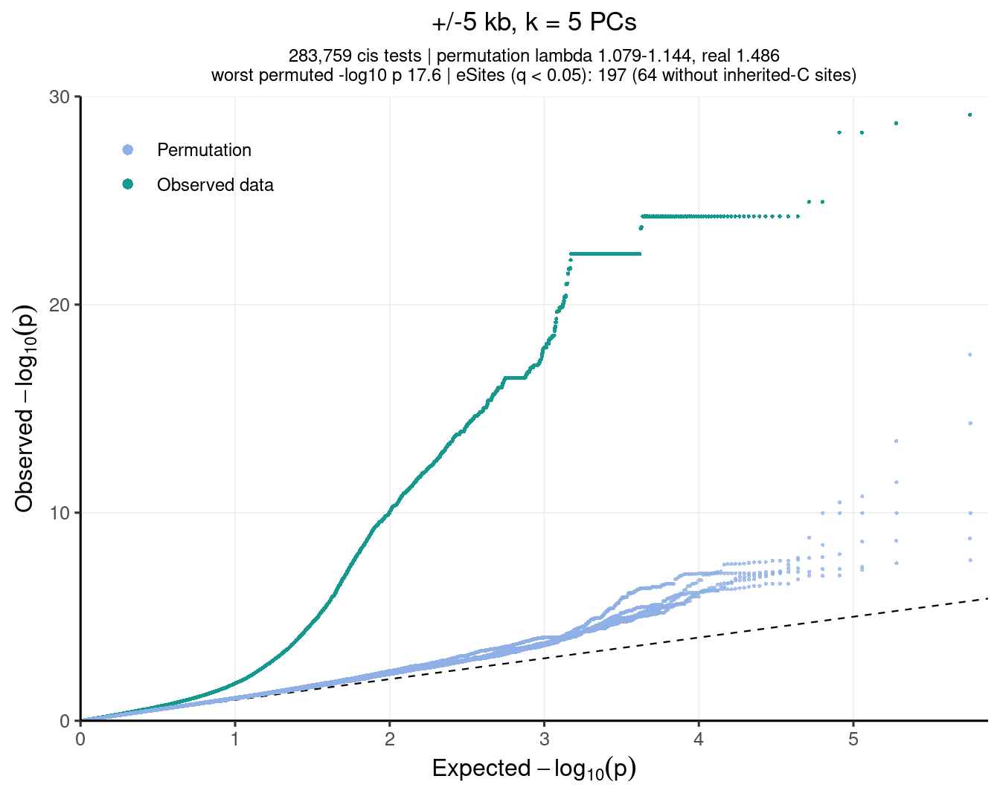
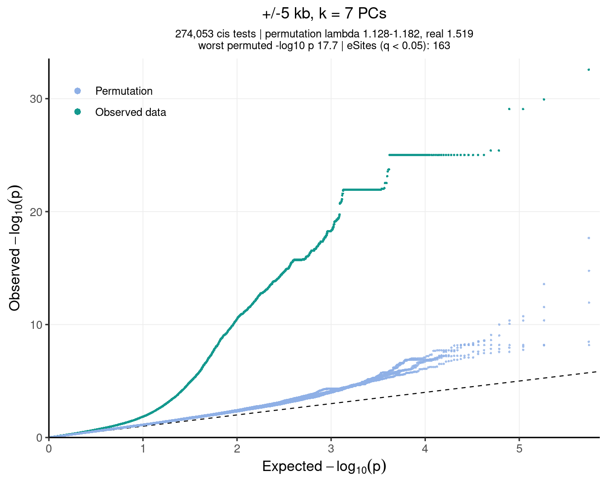
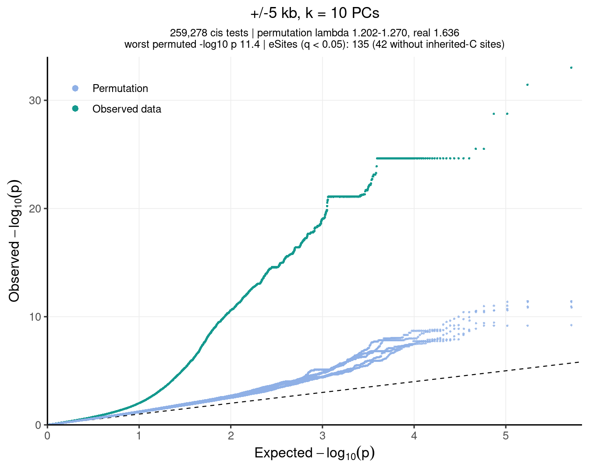
for (k in KS) { cat(sprintf("\n\n### k = %d\n\n", k)); print(qq_plot(20, k)); cat("\n\n") }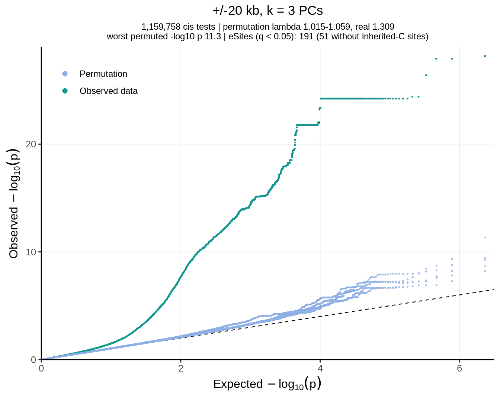
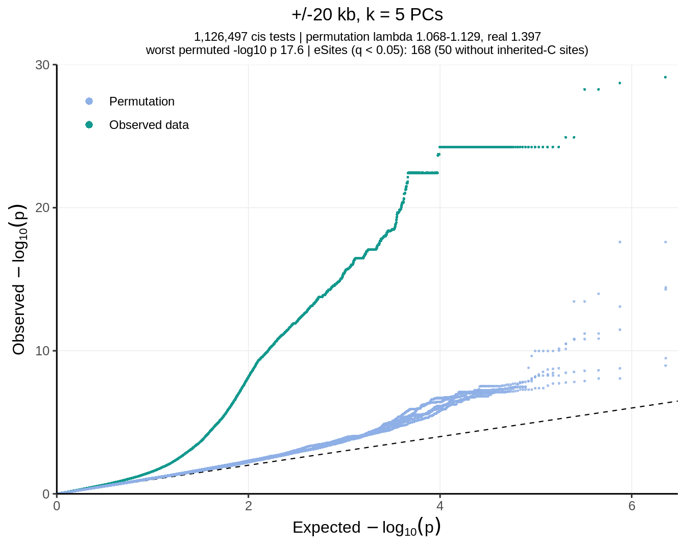
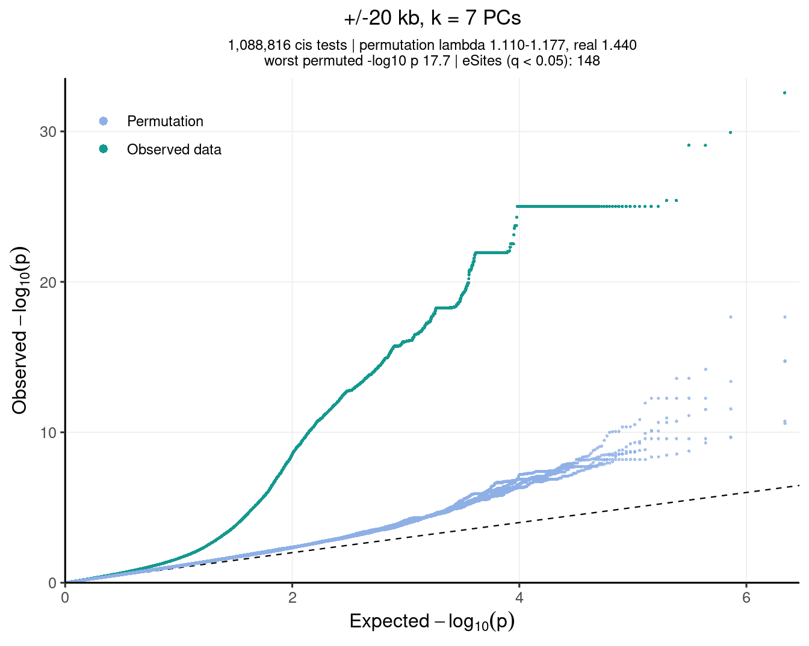
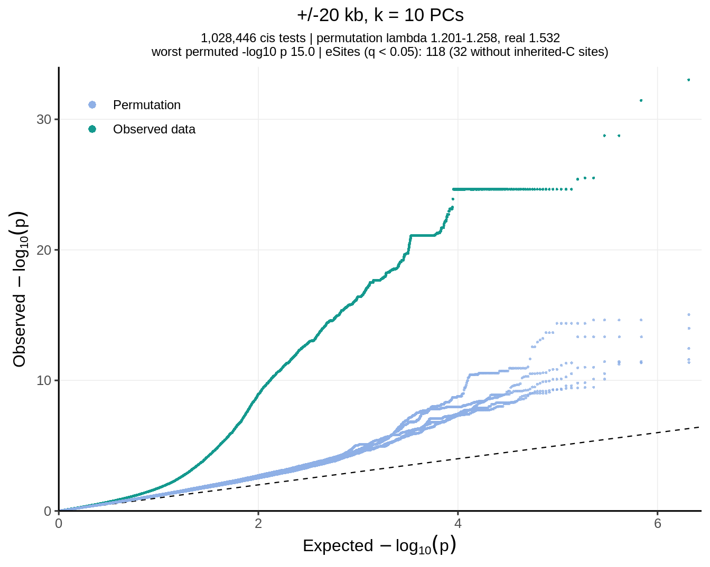
for (k in KS) { cat(sprintf("\n\n### k = %d\n\n", k)); print(qq_plot(50, k)); cat("\n\n") }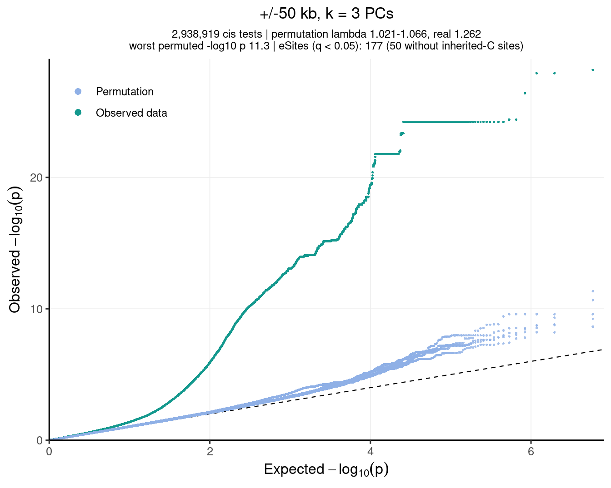
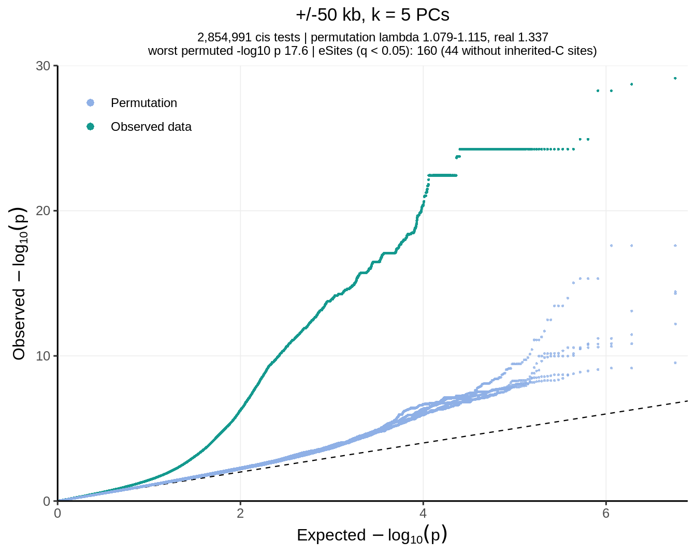
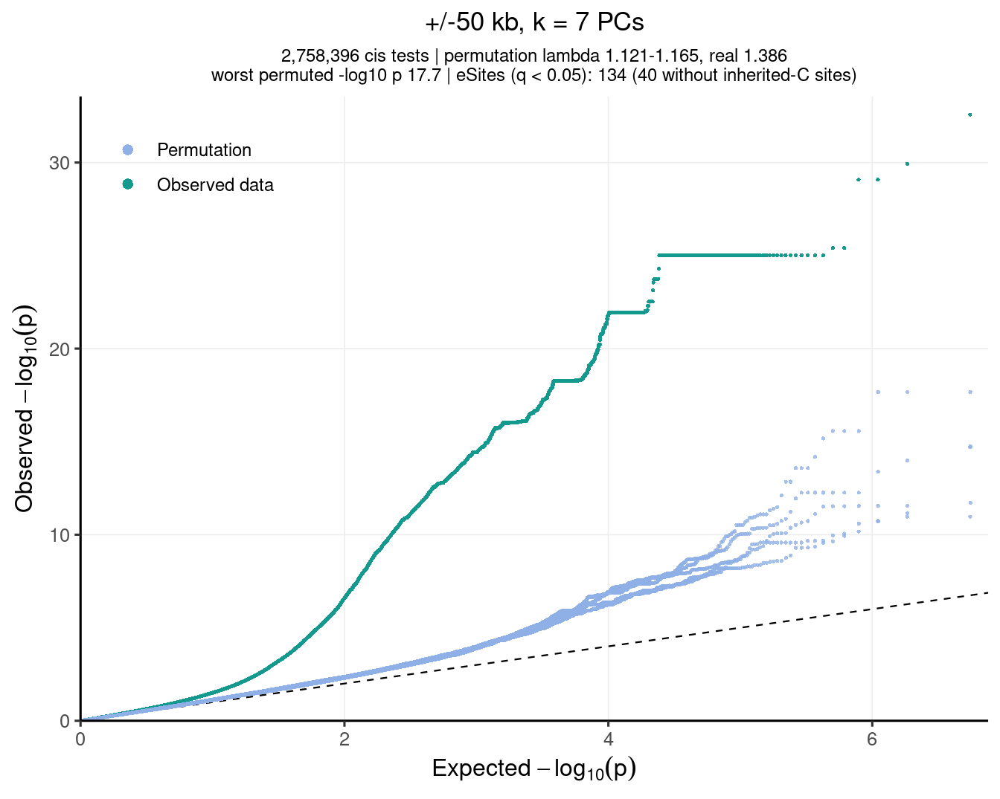
r <- G[, .(lam = sprintf("%.2f-%.2f", min(perm_lambda_min), max(perm_lambda_max))), by = npcs][order(npcs)]Data: calibration_grid/grid_calibration.tsv,
grid_by_dataset.tsv and grid_qq_thinned.tsv.gz
(built by 27.calibration_grid_summary.R from
8.calibration_site_resolved.R runs). eSites come from
pc_window_selection/fold5_union_auto_noUCcalled/summary/
(48.pc_window_selection_summary.R).
Fit diagnostics are reconstructed by
55.pc_window_failure_summary.R from the saved real-data
_sites and _snps logs. Aggregated tables and
per-site diagnostics are in summary/fit_diagnostics/. The
15 tested-site counts were checked against
selection_table.tsv.
sessionInfo()R version 4.2.0 (2022-04-22)
Platform: x86_64-pc-linux-gnu (64-bit)
Running under: Red Hat Enterprise Linux 8.4 (Ootpa)
Matrix products: default
BLAS/LAPACK: /software/openblas-0.3.13-el8-x86_64/lib/libopenblas_skylakexp-r0.3.13.so
locale:
[1] LC_CTYPE=C.UTF-8 LC_NUMERIC=C LC_TIME=C.UTF-8
[4] LC_COLLATE=C.UTF-8 LC_MONETARY=C.UTF-8 LC_MESSAGES=C.UTF-8
[7] LC_PAPER=C.UTF-8 LC_NAME=C LC_ADDRESS=C
[10] LC_TELEPHONE=C LC_MEASUREMENT=C.UTF-8 LC_IDENTIFICATION=C
attached base packages:
[1] stats graphics grDevices utils datasets methods base
other attached packages:
[1] ggplot2_3.4.2 data.table_1.14.4 workflowr_1.7.1
loaded via a namespace (and not attached):
[1] tidyselect_1.2.0 xfun_0.59 bslib_0.3.1 colorspace_2.0-3
[5] vctrs_0.6.1 generics_0.1.3 htmltools_0.5.7 yaml_2.3.5
[9] utf8_1.2.2 rlang_1.1.2 R.oo_1.24.0 later_1.3.0
[13] pillar_1.9.0 jquerylib_0.1.4 glue_1.6.2 withr_2.5.0
[17] R.utils_2.11.0 lifecycle_1.0.4 stringr_1.5.0 munsell_0.5.0
[21] gtable_0.3.0 R.methodsS3_1.8.1 evaluate_0.15 labeling_0.4.2
[25] knitr_1.51 callr_3.7.0 fastmap_1.1.0 httpuv_1.6.5
[29] ps_1.7.0 fansi_1.0.3 Rcpp_1.1.1-1.1 promises_1.2.0.1
[33] scales_1.2.0 jsonlite_2.0.0 farver_2.1.0 otel_0.2.0
[37] fs_1.5.2 digest_0.6.29 stringi_1.7.6 processx_3.5.3
[41] dplyr_1.1.2 getPass_0.2-2 rprojroot_2.0.3 grid_4.2.0
[45] cli_3.6.2 tools_4.2.0 magrittr_2.0.3 sass_0.4.1
[49] tibble_3.2.1 whisker_0.4 pkgconfig_2.0.3 rmarkdown_2.31
[53] httr_1.4.8 rstudioapi_0.14 R6_2.5.1 git2r_0.30.1
[57] compiler_4.2.0